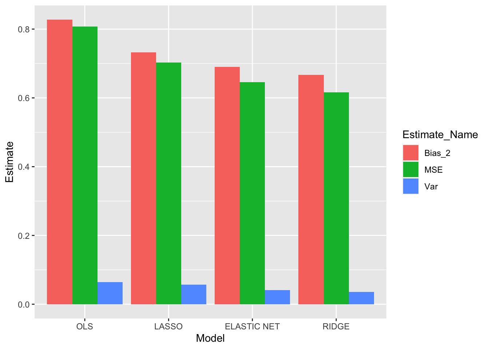
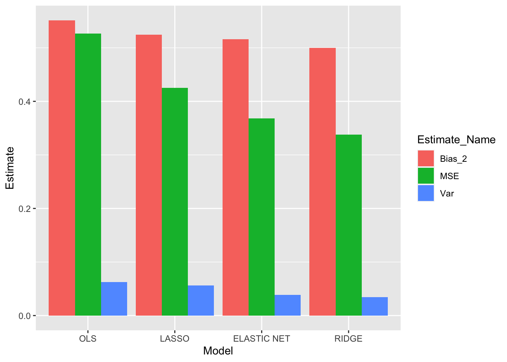
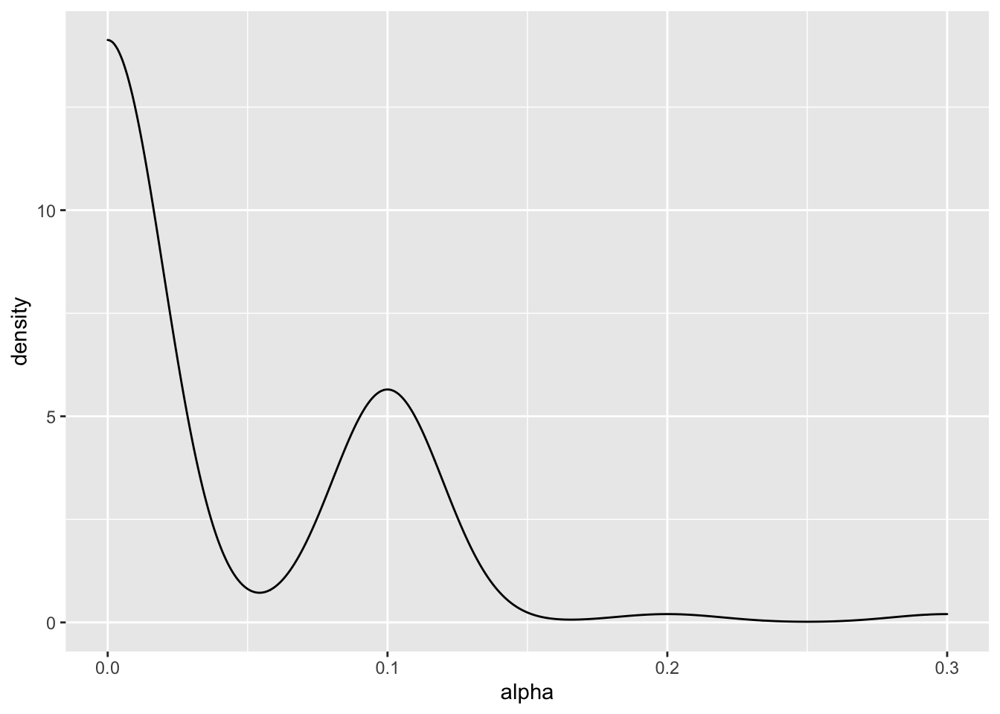
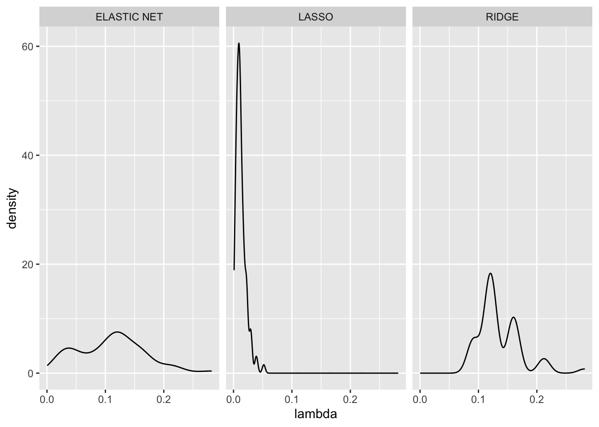

Chapter 4 Simulation
In this simulation we will use 4 different models and test how the coefficient estimates for each model varies from each other.
Each of the models tested, outside of OLS, have a loss function that includes additional “penalties”, which is why these functions are labeled as penalized regression models. The models we will be testing are the following:
-OLS
Which tries to find \(\beta\) estimates that minimize:
\[ \begin{aligned} MSE = \frac{1}{N}(Y - X\beta)^T(Y-X\beta) \end{aligned} \]
-Ridge Regression
Which has an additional regression penalty, called L2: \(\lambda \beta^T\beta\)
Ridge Regression tries to find \(\beta\) estimates that minimizes:
\[ \begin{aligned} &= MSE + \lambda \beta^T\beta\\ &= \frac{1}{N}(Y - X\beta)^T(Y-X\beta) + \lambda \beta^T\beta \end{aligned} \] -LASSO
Which has an additional regression penalty, called L1: \(\lambda|\beta|\)
LASSO tries to find \(\beta\) estimates that minimizes:
\[ \begin{aligned} &= MSE + \lambda|\beta|\\ &= \frac{1}{N}(Y - X\beta)^T(Y-X\beta) + \lambda|\beta| \end{aligned} \]
-Elastic Net
Which is a combination of both L1 and L2 penalties: $^T+|| $
Elastic Net Regression tries to find \(\beta\) estimates that minimizes:
\[ \begin{aligned} &= MSE + \lambda \beta^T\beta+\lambda|\beta|\\ &= \frac{1}{N}(Y - X\beta)^T(Y-X\beta) + \lambda_1 \beta^T\beta+\lambda_2|\beta| \end{aligned} \]
4.1 Simulation of Explanatory Variables
We first start by creating a simulation of data. The dataset includes a covariance matrix to include multicollinearity within the columns of the data. This allows us to explore the benefits of penalized regression models when there is multicollinearity. Based on a pre-determined set of betas we use the these values to create our dependent variable for which we add some noise e.
We decided to use a small dataset with loads of predictors to see what potential benefits Penalized Regression Models can have on small datasets.
The true values of Y will be estimated using the following formula:
\[ Y = X\beta + \epsilon \] Where \(\epsilon \sim N(0,25)\)
We simulated the dataset for 100 times. And the dataset simulation_all contains all the 50 different coefficient estimates for all the 100 iterations for all 4 models.
## Warning: Missing column names filled in: 'X1' [1]## Parsed with column specification:
## cols(
## .default = col_double(),
## Model = col_character()
## )## See spec(...) for full column specifications.Each simulation consists of 50 predictors, and 100 observations.
4.2 Calculate Bias, Variance, MSE of the Coefficients in the Model
bias<-simulation_all%>%
mutate(Coefficient_Means = rowMeans(.[4:103]))%>%
mutate(Bias = Coefficient_Means - betas)%>%
dplyr::select(c(Model, Coefficient, Bias, Coefficient_Means, betas))
simulation_all_long<-
gather(simulation_all, Simulation, Estimate, simulation_1:simulation_100)
MSE<-simulation_all_long%>%
mutate(diff = (Estimate - betas)^2)%>%
group_by(Model, Coefficient)%>%
summarize(MSE = mean(diff))## `summarise()` regrouping output by 'Model' (override with `.groups` argument)var<-simulation_all_long%>%
group_by(Model, Coefficient)%>%
mutate(mean_Estimate = mean(Estimate))%>%
mutate(diff = (Estimate - mean(Estimate))^2)%>%
group_by(Model, Coefficient)%>%
summarize(Var = mean(diff))## `summarise()` regrouping output by 'Model' (override with `.groups` argument)## Joining, by = c("Model", "Coefficient")## Joining, by = c("Model", "Coefficient")results_df<-results%>%
dplyr::select(Model, Coefficient, betas, Coefficient_Means, Bias, Var, MSE)%>%
mutate(Bias_2_plus_Var = Var + Bias^2)
colnames(results_df)<-c("Model", "Coefficient #","True Coefficient Values", "Estimation Mean", "Bias","Var", "MSE", "Calculated MSE")
results_df%>%
filter(`Coefficient #` ==4)## # A tibble: 4 x 8
## Model `Coefficient #` `True Coefficien… `Estimation Mea… Bias Var MSE
## <chr> <dbl> <dbl> <dbl> <dbl> <dbl> <dbl>
## 1 OLS 4 -0.5 -0.447 0.0525 0.0625 0.0626
## 2 RIDGE 4 -0.5 -0.367 0.133 0.0362 0.0437
## 3 LASSO 4 -0.5 -0.396 0.104 0.0600 0.0633
## 4 ELAST… 4 -0.5 -0.378 0.122 0.0421 0.0478
## # … with 1 more variable: Calculated MSE <dbl>We decided to look how our Models fair for the Coefficient of X4, as we can see most of the models come close to the True Coefficient Value of -0.5. And similar to the proofs we solved in previous sections, we see that OLS has the lowest coefficient bias for X4 but unfortunately it has the greatest Variance. Because of its high variance it ends up having the second largest MSE even though it had the lowest Bias.
As we can see the property that \(MSE = Bias^2 + Var\) is seen by how close the value of the Calcualted MSE is to the actual MSE value. And in terms of what it means when evaluating which model to use, by increasing the bias like in the RIDGE Model we are able to reduce the MSE value by almost 0.02.
Lets see what the average and median value of Bias, MSE, and Variance for our coefficients fair for all the models:
4.3 Results
#lets look at coefficient 1 and how the bias, variance and MSE have changed
median_results<-results%>%
mutate(Bias_2 = Bias^2)%>%
dplyr::select(c(Bias_2, Var, MSE, Model))%>%
group_by(Model)%>%
summarize_if(is.numeric, median, na.rm=TRUE)
average_results<-results%>%
mutate(Bias_2 = Bias^2)%>%
dplyr::select(c(Bias_2, Var, MSE, Model))%>%
group_by(Model)%>%
summarize_if(is.numeric, mean, na.rm=TRUE)## # A tibble: 4 x 4
## Model Bias_2 Var MSE
## <chr> <dbl> <dbl> <dbl>
## 1 ELASTIC NET 0.691 0.0410 0.646
## 2 LASSO 0.732 0.0566 0.703
## 3 OLS 0.828 0.0642 0.808
## 4 RIDGE 0.667 0.0354 0.616Models<- c("OLS","LASSO","ELASTIC NET","RIDGE")
average_results%>%
gather(Estimate_Name, Estimate, Bias_2:MSE)%>%
ggplot(aes(x = Model, y = Estimate , fill = Estimate_Name))+
geom_bar(stat = "identity", position = position_dodge())+
scale_x_discrete(limits = Models)
As it can be seen by the results above, we see that on average, Ridge regression tends to have the lowest MSE estimates, while OLS has the highest MSE estimates. This is a bit expected given the multicolinearity of the dataset for which some of the beta values were zero. Unexpectedly, OLS has the highest out of all the models
## # A tibble: 4 x 4
## Model Bias_2 Var MSE
## <chr> <dbl> <dbl> <dbl>
## 1 ELASTIC NET 0.516 0.0386 0.368
## 2 LASSO 0.524 0.0565 0.425
## 3 OLS 0.551 0.0627 0.526
## 4 RIDGE 0.500 0.0341 0.338median_results%>%
gather(Estimate_Name, Estimate, Bias_2:MSE)%>%
ggplot(aes(x = Model, y = Estimate , fill = Estimate_Name))+
geom_bar(stat = "identity", position = position_dodge())+
scale_x_discrete(limits = Models)
Similar to the average values, we still see the same pattern. Ridge has both the lowest Bias and Variance, and therefore lowest MSE. And OLS has the highest Bias and Variance and thus the highest MSE.
## Warning: Missing column names filled in: 'X1' [1]## Parsed with column specification:
## cols(
## X1 = col_double(),
## alpha = col_double(),
## lambda = col_double(),
## Model = col_character(),
## Simulation_number = col_double()
## )4.4 Visualizations
## `summarise()` ungrouping output (override with `.groups` argument)## # A tibble: 3 x 3
## Model mean_lambda mean_alpha
## <chr> <dbl> <dbl>
## 1 ELASTIC NET 0.111 0.033
## 2 LASSO 0.0127 1
## 3 RIDGE 0.136 0As we can see from this table, ELASTIC NET prefers to have a smaller alpha value, meaning that the ELASTIC NET will have a higher Ridge or L2 weight. This makes sense as compared to LASSO, the RIDGE regression provides results with lower MSE. Also as seem by the graph below, we see that the estimates for alpha for the elastic net have modes around 0 and 0.1.


The tuning parameters are very interesting to explore. Firstly we see that the values of lambda seem to be centered around one value. LASSO seems to have a very clear estimate across simulations, while ridge and elastic net follow sparser values for lambda. When comparing Ridge and Elastic Net estimates for lambda we see that Elastic Net seems to be more smooth bi-modal distribution. Ridge regression seems to be a multi-modal distribution that is not as smooth.